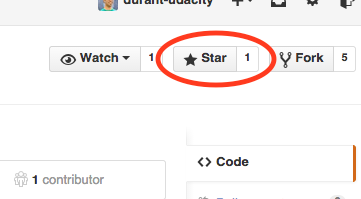

GitHub Profile Checklist
= Optional Udaciousness
Link to associated GitHub Profile Rubric
General
- I include at least three projects on my GitHub account.
- My GitHub account shows knowledge about how to make incremental commits
- My commit graph shows many green squares for the last two weeks. (This indicates that commits have been pushed regularly).
- I’ve contributed to an open source project.
Personal Profile
- My GitHub username is professional.
- My profile picture is a professional image.
- My profile includes at least one up-to-date links for: 'URL' and/or 'Company' fields and/or ‘Contact Email’.
- My profile includes my current location.
Projects
- My last commit made matches the Udacity Git Commit Message Style Guide. If it does not, I indicate that I am following another style guide
- My projects are forked appropriately.
- My projects have meaningful names and descriptions.
- My most recent three projects have a completed README practices.
- I have starred at least one repository I’d like to keep track of.
